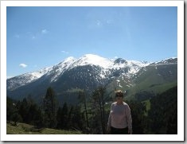

Essa é só de 355ml! 🙂
Hoje fui ver a chegada da meia maratona de sbc em que não achei o Thiago, amigão, queria bater uma foto dele atravessando a linha de chegada. Mas não foi desta vez.
Depois fomos para o parque Cidade São Bernardo, saímos de lá e fomos almoçar pastéis e depois fomos ao parque Chico Bento, quer dizer, Chico Mendes.
Qual não foi a surpresa de dar de cara com uma exposição de carros antigos. Muito legal sair de uma exposição de carros velhos (minha rua) e ir em uma exposição de carros antigos.
O Maurício pirou ao ver o Optimus-Prime (lider dos Autobots / Transformers).
Já estávamos indo embora quando avistamos o Herbie, a Olívia ficou emocionada e fez questão de tirar uma foto do lado e agora quer que a gente revele e coloque em um porta retrato.
.jpg "IMG_7320 (1024x768)")
.jpg "IMG_7321 (1024x768)")
.jpg "IMG_7322 (768x1024)")
.jpg "IMG_7323 (768x1024)")
.jpg "IMG_7324 (1024x768)")
.jpg "IMG_7325 (768x1024)")
.jpg "IMG_7326 (1024x768)")
.jpg "IMG_7327 (1024x768)")
.jpg "IMG_7328 (1024x768)")
.jpg "IMG_7329 (1024x768)")
.jpg "IMG_7330 (1024x768)")
.jpg "IMG_7331 (768x1024)")
.jpg "IMG_7332 (768x1024)")
.jpg "IMG_7333 (1024x768)")
.jpg "IMG_7334 (1024x768)")
.jpg "IMG_7335 (1024x768)")
.jpg "IMG_7336 (1024x768)")
.jpg "IMG_7337 (1024x768)")
.jpg "IMG_7338 (1024x768)")
.jpg "IMG_7339 (1024x768)")
Ola Pessoal
Ja estamos em contagem regressiva para a volta Hoje estamos em Oliveira do Hospital cidade aproximadamente 40 km de Seixas
Amanha voltaremos para Coimbra vamos dar mais um giro pela cidade. Domingo passado tivemos em Lisboa cidade bonita mais com características da Rocinha Rio de Janeiro Passeamos de Metro Bondinho e viajamos ida e volta de Comboio (trem) Estaremos viajando de Volta SabadoAbraços
Braz E Maria José
Tichau

{kind=link}
{kind=link}
{kind=link}
{kind=link}
Nazaré Portugal
Ola Pessoal …..Tudo Bem
Nos aqui estamos muito bem passeando muito.
chegamos ontem a noite de um passeio por, Fatima, Alcobaça, Batalha, Nazaré, Luso……..
Estamos hoje em Oliveira do Hospital viemos comprar sardinha para a sardinhada do almoço amanha partiremos para Santiago de Compostela Espanha
e depois iremos a Lisboa.Abraços
Braz
{kind=link}
Fátima Portugal
{kind=link}
{kind=link}
{kind=link}
{kind=link}
cachorrinho de flores – Bilbau Paises Bascos
{kind=link}
Olha só a aranha que eu comprei pra Maria – Bilbau
Ola Tudo Bem?
Estamos hoje em Madri, chegamos ontem a tarde Passamos um dia e meio na França em Loourdes depois fomos para Andorra de Andorra para Zaragoza e Madri apos o almoço vamos para Coimbra PT Vamos dormir em Coimbra e amanha cedo pegaremos o coche e iremos para a Seixas
Um Beijo a todos Braz e Maria
Aqui são 9 horas voces estão dormindo
Da um beijão no Dante

Serra do pyrineus Tem muito Gelo Região das montanhas Principado de Andorra Pais Basco
{kind=link}
{kind=link}
Gelinho – Andorra
{kind=link}
Loourdes França
Comentários recentes